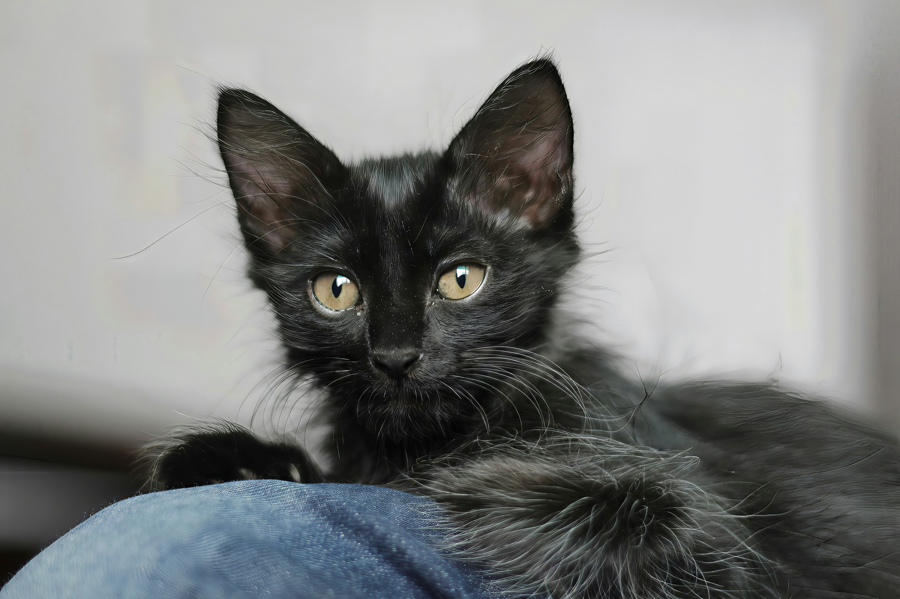

Artículo destacado de la semana
Los gatos son mascotas adorables que arrasan en las encuentas de popularidad, se he realizado una encuesta en la poblacion nacional y se ha determinado que los gatos se sienten los dueños y no las mascotas de su propia casa.
Leer másGato naranja

Los gatos naranjas son bien conocidos por ser gatos "problematicos" o "caoticos" por lo que se le da un documento para que los pueda identificar facilmente.
Leer másGato Negro

Si bien eran conocidos por ser gatos de mala suerte o mascostas de brujas a día de hoy simplemente son gatitos muy amados y bonitos.
Leer más